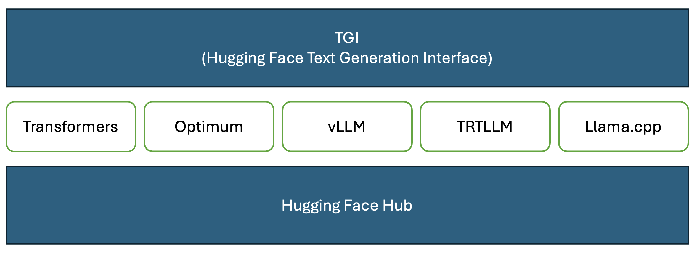

Inference
Server und Engine
Die Nutzung eines Modells (LLMs) zur Inference kann grundsätzlich in zwei Komponenten unterteilt werden: Die Inference Engine und der Inference Server. Die Inference Engine kümmerts sich um das Laden des Modells, den Aufruf des Modells zur Next-Tolken-Prediction, sowie das das Stapeln der Anfragen (Batching), während der Inference Server die Weiterleitung der Benutzeranfragen übernimmt.
Die Inference Engine kann eine Vielzahl von Optimierungstechniken unterstützen. Im Kern handelt es sich um Python- oder C++-Bibliotheken. Sie sorgen für das Stapeln der Anfragen (Batching), die von den Benutzern an unseren Chatbot gerichtet werden, und für die Generierung der Antworten auf diese Anfragen.
Der Inference Server übernimmt die Orchestrierung der HTTP/gRPC-Anfragen, die von den Benutzern eingehen. Die Server nehmen die Benutzer-Anfragen entgegen und stellen sie in die Warteschlange, bis sie sie an die Inference Engine weiterleiten, die dann die Antwort generiert.

Anmerkung: Einige LLM-Gateways fungieren als Server.
Metriken
Es gibt zwei wesentliche Metriken, die unser Verständnis von der Leistung des Systems und der Benutzererfahrung prägen. Das sind Durchsatz und Latenz. Diese werden in der Regel vom Server gemessen und zurückgeliefert.
| Metrik | Auswirkung |
|---|---|
| Latenz | Latenz spiegelt die Zeit wider, die der Server und das Modell benötigen, um die vollständige Ausgabe in der Ausgabesequenz zu erzeugen. Wenn wir die erzeugte Ausgabe an den Endbenutzer streamen, bezieht sich die Latenz speziell auf die Zeit, die der Inferenzserver benötigt, um das allererste Token zu erzeugen. Diese Zeit für die Erzeugung des ersten Tokens wird auch als „time to first token“ (TTFT) bezeichnet. |
| Die Latenz ist das, was der Benutzer spürt - die Zeit, die er braucht, um eine Antwort vom Chatbot zu erhalten. | |
| Durchsatz | Der Durchsatz gibt an, wie viele Nutzer unser System effektiv bedienen kann. Der Durchsatz steht für die Anzahl der vom Inferenzserver pro Sekunde generierten Token während der zahlreichen Anfragen der Benutzer. Je höher der Durchsatz ist, desto besser kann unser System auf Benutzeranfragen eingehen und reagieren. |
| Beim Durchsatz geht es nicht nur darum, wie viele Benutzer unser System effektiv gleichzeitig bearbeiten kann, sondern er wirkt sich auch auf die Benutzererfahrung im Stream-Modus aus - die Benutzer spüren die Geschwindigkeit, mit der neue Wörter generiert werden. |
Auf was solle man achten
Bei der Auswahl von Inference Server und Inference Engine sind folgende Eingenschaften relevant, die sich auf Durchsatz und Latenz auswirken:
Inference Engine:
- Speicher-Management (KV-Cache): FIFO und Speicherreservierung
- Stapelverarbeitung von Anfragen (Batching)
- Modellspezifische Optimierung (Paged Attention)
- Quantisierung: Fähigkeit quantisierte Modelle zu nutzen
Inference Server:
- HTTP/gRPC-APIs: z.B. OpenAI API
- Verwaltung der Anfrage-Warteschlangen (Queuing)
- Multi-Modell-Unterstützung
- Multi-Engine-Unterstützung
Gängige Inference Server / Engines
Open-Source (und Open-Weight) Modelle können in unterschiedlichen Binärformaten vorliegen:
- PyTorch Format: PyTorch-Modellgewichte werden mit dem Pickle-Dienstprogramm von Python in einer bin-Datei gespeichert.
- Safetensors Format: Safetensors ist ein von Hugging Face entwickeltes sicheres und schnelles Dateiformat zum Speichern und Laden von Tensoren.
- Quantisierte Modelle: GGUF
Nicht jede Inference Engine kann jedes Modell Speicher-Format verwenden.
Ollama
Ollama ist ein in der Programmiersprache Go programmierter OpenAI kompatibler Server, der die Inference Engine llama.cpp nutzt. llama.cpp ist eine in C/C++ geschriebene Inference Engine. llama.cpp kann Modelle ausführen, weclhe im GGUF Dateiformat vorliegen. GGUF ist ein binäres Dateifomat für Inference mit der Tensor-Bibliothek für maschinelles Lernen GGML.
llama-cpp-python
Die Python-Bindings llama-cpp-python für llama.cpp stellen ebenfalls einen OpenAI API kompatiblen Web-Server zur Verfügung.
vLLM
OpenLLM
OpenLLM ist ein Inference Server welcher entweder Pytorch als Backend or vLLM als Inference Engine verwendet. Ist ein Modell nicht für vLLM verfügbar, dann wird es mit dem Pytorch Backend geladen.
Weitere Inference Server
- Text Generation Inteface (TGI) von Hugging Face
- TorchServe
- Ray
- Nvidia TensorRT-LLM (TRTLMM)
Neue Entwicklungen
Hugging Face arbeitet an einem neuen TGI Multi-Backend, das unter der Haube alle wesentlichen Inference Engines kapseln soll.
